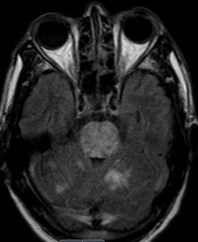
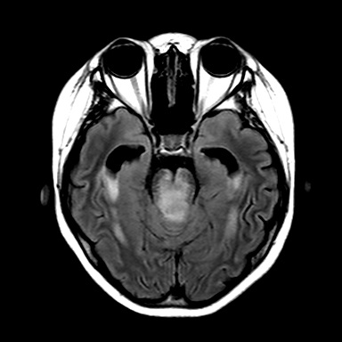
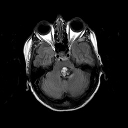
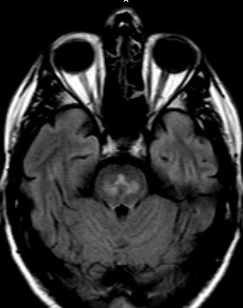

☰
Brainstem Ocular Motor Disorders
Bilateral Pontine Syndrome
What is it?
Reduced horizontal eye movements to both sides but preserved vertical eye movements caused by a bilateral pontine lesion
Often accompanied by other neuro-ophthalmic and neurologic deficits
Common causes: pontine infarct or hemorrhage, autoimmune demyelination, cavernous malformation (“cavernoma”)
Uncommon causes: pontine tumor, osmotic demyelination (“myelinolysis”)
What does it look like?
Core features
Slow, reduced, or absent horizontal gaze to both sides, often with relatively preserved vertical gaze
Doll’s eye and caloric testing do not overcome the horizontal gaze paresis
Convergence of the eyes on attempted lateral gaze (“substituted convergence”)
Preserved vertical gaze
Preserved pupil constriction to light
Skew deviation sometimes
Possible accompanying neurologic features
Quadriparesis (“locked-in syndrome”)
Bilateral facial palsies




MRI usually shows a dramatic pontine lesion, such as infarction,
diffuse infiltrating glioma,
cavernoma,
or demyelination
What else looks like it?
Myasthenia gravis
Fisher variant of Guillain-Barré syndrome
Wernicke encephalopathy
What should you do?
Localize the lesion to the pons by finding that the doll’s eye maneuver does not overcome the volitional gaze paresis
Look for other localizing clinical abnormalities
Exclude myasthenia gravis, Fisher variant of Guillain-Barré syndrome, Wernicke encephalopathy
Order CT/CTA, MRI/MRA promptly
What will happen?
Depends on the cause
Expect limited recovery in pontine infarct/hemorrhage
Tip:
add Wernicke encephalopathy to the differential diagnosis when there is any gaze paresis, especially with gaze-evoked jerk nystagmus!
Brainstem Ocular Motor Disorders
Internuclear Ophthalmoplegia
Skew Deviation
Dorsal Midbrain Syndrome
Thalamic or Tegmental Midbrain Syndrome
Unilateral Pontine Syndrome
Bilateral Pontine Syndrome
Dorsolateral Medullary (Wallenberg) Syndrome
Ototoxic Vestibulo-ocular Dysfunction Syndrome
Acute Upgaze Deviation
Acute Downgaze Deviation
Acute Comitant Esotropia
Omnidirectional Slow Saccades
Omnidirectional Saccadic Pursuit